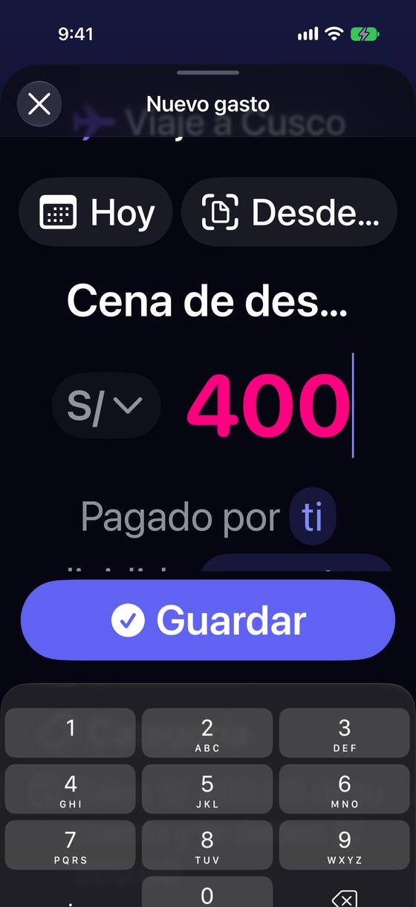
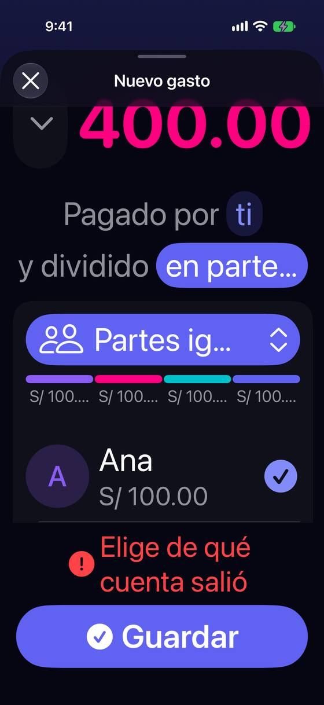
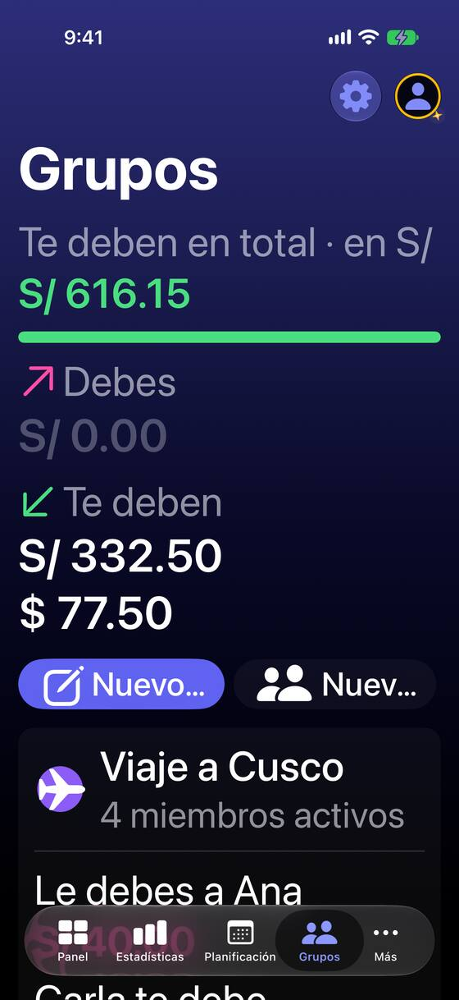
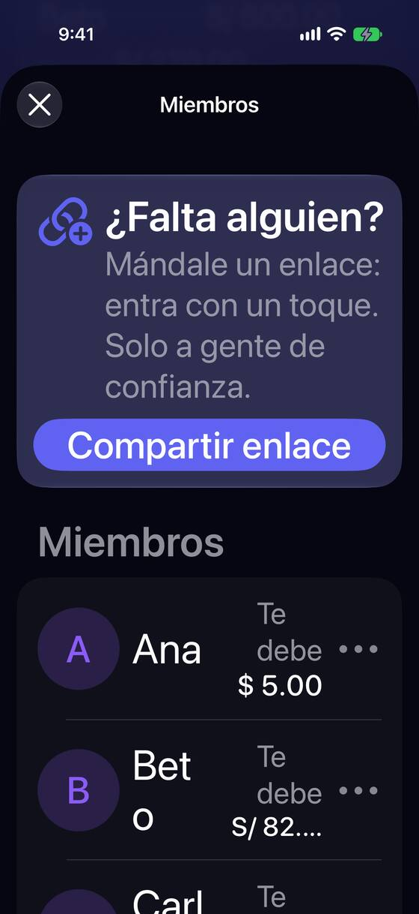
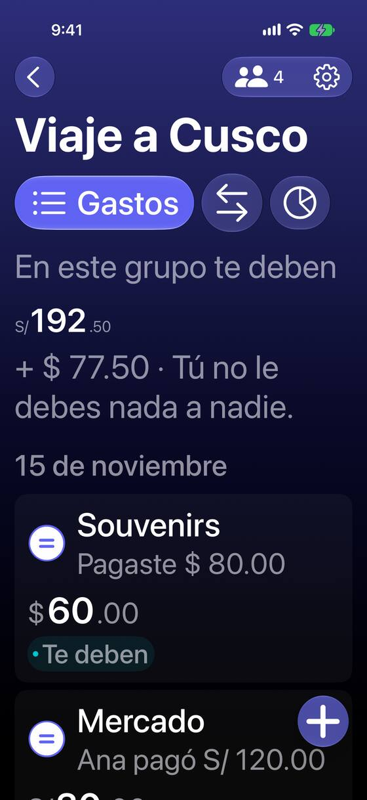
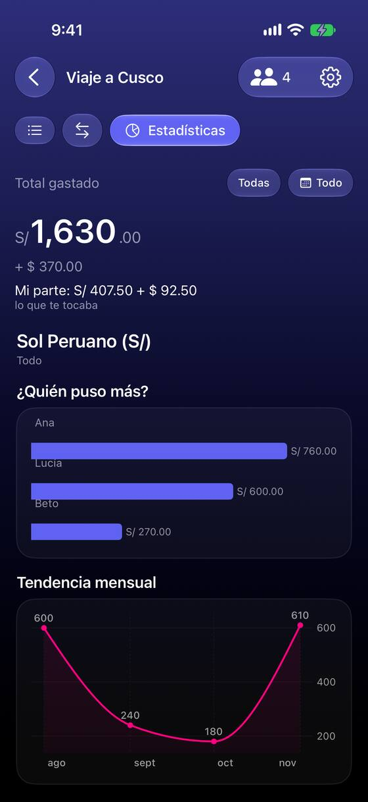

Con texto grande se corta justo lo que hay que leer para decidir
Hoy
Capturas del simulador (app de origin/2.3, semillas de prueba). Pasos hoy: 8 cortes de texto en 6 pantallas con AX3; 2 controles mudos para VoiceOver.






De dónde sale
- Captura Capturas ax3-60, ax3-63, ax3-01, ax3-20 y ax3-23 (AX3, iPhone 17 Pro): los cortes citados.
- Captura Captura 16 (tamaño normal) y ax3-16: las barras de «¿Quién puso más?» pasan por encima de «Lucía» y «Beto».
- Captura Captura ax3-10: «S/192.50» más pequeña que «En este grupo te deben».
- Código
GroupExpenseFormView.swift:535-541: el importe es unTextField("")sin etiqueta.SettlementFormView.swift:212:Picker("")de moneda sin etiqueta;:323: importe de 36 pt fijo. - Código
GroupStatsView.swift:291: alto fijo de n × 44 en las barras;GroupBalancesView.swift:420: VoiceOver lee la flecha de las filas de pago. - Hipótesis VoiceOver se leyó en el código, no encendido. Hay que comprobarlo en el iPhone.
Las opciones
De 3 a 5 alternativas con el mismo caso. Desliza cada recorrido; el anillo cian marca dónde toca Lucía.
Con texto grande, la frase y los chips pasan a filas
A partir de AX1, «Pagado por [Ana] y dividido [a medida]» y los chips «Hoy · Desde un recibo» se convierten en filas de lado a lado, una por dato, como en Ajustes. El reparto apila nombre e importe en dos líneas. Nada se corta y cada fila es un blanco de toque grande.
A favor
- Se lee todo lo que hay que decidir, sin «…».
- Filas de 44 pt o más: sirve también para quien toca con poca precisión.
- Es el patrón de Ajustes, que la persona ya conoce.
En contra
- Dos maquetaciones del formulario (normal y grande) que mantener.
- Con AX5 el formulario se alarga y hay que desplazarse.
Solo quitar los recortes: dos líneas donde hoy hay una
Sin cambiar el diseño: los textos que hoy se cortan con «…» pueden ir en dos líneas, los botones de la lista se apilan («Nuevo gasto» encima de «Nuevo grupo») y en Miembros el importe baja debajo del nombre.
Grupos
S/ 40.00
+ $ 30.00
+ $ 42.50
A favor
- Lo más barato: cambios de una línea por sitio.
- No cambia nada a tamaño normal.
En contra
- La frase del formulario sigue siendo una frase partida en pastillas: con AX5 vuelve a no caber.
- No arregla VoiceOver.
La cifra del grupo crece con el texto y va primero
Hoy, con AX3, «S/ 192.50» queda más pequeña que «En este grupo te deben». La cifra pasa a crecer con el texto (con techo) y se pone encima del rótulo, como propone PN-6 para el Panel.
Viaje a Cusco
A favor
- Recupera la jerarquía: lo importante se ve primero.
- Se decide una vez para Panel, Estadísticas y Grupos.
En contra
- Una cifra muy grande con dos monedas puede no caber: necesita su propio corte de línea.
VoiceOver dice el dato, no «0.00» ni «flecha»
Etiquetas para los controles que hoy no la tienen: el importe del gasto («Importe del gasto, 400 soles»), la moneda de un pago («Moneda, soles»), las filas de pago («Ana le pagó a Lucía 5 dólares, confirmado»).
Viaje a Cusco
A favor
- Sin cambio visual.
- Arregla lo que hoy es inutilizable con VoiceOver (un campo que dice «0.00»).
En contra
- Hay que medirlo con VoiceOver encendido en el iPhone, no solo en el árbol de accesibilidad.
Lado a lado
La última pantalla de cada recorrido, frente a hoy.
+ $ 30.00
+ $ 42.50
Viaje a Cusco
Viaje a Cusco
Comparación
| Opción | Pasos para el caso (maqueta) | Esfuerzo | Riesgo | Reabre |
|---|---|---|---|---|
| Hoy | 8 cortes de texto en 6 pantallas con AX3; 2 controles mudos para VoiceOver. | — | — | — |
| E1 · Con texto grande, la frase y los chips pasan a filas | Los mismos toques; ningún dato cortado | medio | bajo | — |
| E2 · Solo quitar los recortes: dos líneas donde hoy hay una | Igual que hoy | bajo | bajo | — |
| E3 · La cifra del grupo crece con el texto y va primero | Igual que hoy | bajo-medio | bajo | — |
| E4 · VoiceOver dice el dato, no «0.00» ni «flecha» | Igual que hoy | bajo | bajo | — |
Lente de perfiles
Perfiles simulados, no entrevistas Los siete perfiles de la revisión del usuario nuevo, usados como lentes. riesgo alto de trabarse · medio · bajo.
| Perfil | Hoy | E1 | E2 | E3 | E4 |
|---|---|---|---|---|---|
| P1 · Migrante de Excel | — | — | — | — | — |
| P2 · Principiante abrumado | — | filas con nombre | — | — | — |
| P3 · Anotador rápido que no lee | — | — | — | ve la cifra | — |
| P4 · Experto de otra app (Splitwise, Tricount) | — | — | — | — | — |
| P5 · Llega por una invitación de grupo | — | — | — | — | — |
| P6 · Varias monedas y tarjeta | importes largos | — | — | dos monedas | — |
| P7 · Texto grande, a veces en iPad | no lee lo que decide | lo lee todo | mejor, no del todo | cifra grande | lo oye entero |
Recomendación: E1
E1 (filas con texto grande) más E4 (etiquetas de VoiceOver) arreglan las dos formas de no poder usar el formulario; E2 es el arreglo barato para lista, Miembros y Ajustes, y puede ir ya. E3 conviene decidirla junto con PN-6 del Panel, para que la cifra principal se comporte igual en toda la app.
Qué decide Jürgen
- ¿La frase y los chips del formulario pasan a filas con texto grande (E1)?
- ¿Etiquetas de VoiceOver para importe, moneda y filas de pago (E4), comprobadas con VoiceOver en el iPhone?
- ¿La cifra del grupo crece con el texto (E3), decidido junto con PN-6 del Panel?
Revisión por vistas 2.3 · Grupos. Maquetas en HTML con datos ficticios: no son la app. Pasos contados sobre las maquetas; los de «Hoy», en el simulador o en el código citado.